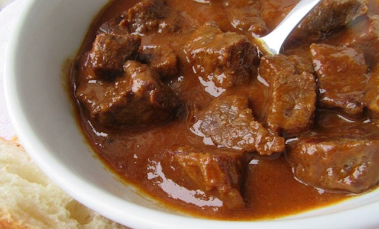

Goulash

Gulaš, also spelled, goulash is one of the most popular comfort foods all over the Balkans, and Croatia is no exception. If we are preparing this dish the traditional way, then we need only a few ingredients and a few hours of our time, as in the Balkans, we have a rule for how to make goulash: “low and slow!”
Ingredients
- 500 g beef (chuck steak) (1lb 1.65 oz)
- 2-3 onions
- 2-3 carrots
- 2 cloves of garlic
- 2 bay leaves
- 200 ml red wine (1 cup)
- 2 litres water or stock (8.5 cups)
- 3 tablespoons mustard (any type you have handy)
- 1 teaspoon salt
- 1/2 teaspoon pepper
- 1/2 teaspoon red paprika
- 2 tablespoons of pork fat or vegetable oil
Instructions
- Clean the meat from the veins if there are some and cut it into smaller pieces, 3 × 3 cm. Marinate the meat in the mustard and spices and let it sit in the refrigerator for one hour
- Heat one tablespoon of pork fat or vegetable oil in a pot and fry the meat on all sides until it gets browned. Once the meat is cooked, transfer it to a plate and add another tablespoon of fat to the pot
- Cut the onions very fine, peel the carrots and shred it using a grater. Cook the onions and carrots over low heat for 15 minutes. You can salt the vegetables a little to make them soften faster
- Once the vegetables have browned and become slightly mushy, add the meat and bay leaves and garlic. Pour over with wine and simmer for 10-15 minutes to allow the alcohol to evaporate. Now is the right time to add 2/3 the amount of liquid
- Cover the pot and cook over low heat for an hour, stirring occasionally. After the first hour, pour over the rest of the water or stock and cook for another 30-45 minutes
- Allow the stew to cool slightly and serve it with a sprinkle of chopped parsley and few slices of fresh hot pepper if you like to spice it up a bit
- Slice some fresh bread, season the salad and simply enjoying these wonderful flavors
Optional Extra: throw in a few dried prunes, as that will also add some wonderful flavor.
Enjoy!
Return to main page